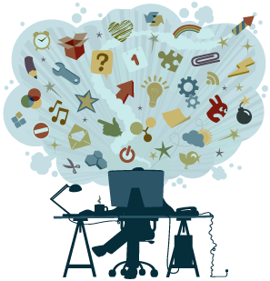

Vakken
In de Opleiding applicatieontwikkeling krijg ik de vakken Engels, Nederlands, Rekenen, HTML, CSS, Javascript, SLB, en een klein beetje van beheer. De vakken Engels, Nederlands, en Rekenen vind ik tot nu toe nog niet zo moeilijk, maar van het onderdeel beheer snap ik niet zoveel. dus ben ik blij dat ik applicatieontwikkeling heb gekozen. De rest van de vakken zijn gewoon goed te volgen en heb ik niet echt bijzonder veel moeite mee.
Opdrachten
Natuurlijk hebben we ook een aantal opdrachten gekregen. We moesten namelijk voor nederlands op studiemeter moeten oefenen, maar ook moesten we een tekst in de verleden tijd schrijven over onze tijd op de middelbare school.

En voor SLB & Burgerschap moesten we een comercial maken over iets met ICT en een spiegelportofolio, maar ook een presentatie over onze eigen ontwikkeling hier op school. Bij ICT beheer moesten we ook een aantal opdrachten maken waaronder een hardware les voor de basisschool. En voor het onderdeel HTML en programmeren hadden we de volgende opdrachten: Wie ben ik, de vloot, layout, recepten, grid, handy, robotarm & robotarmjs. Deze projecten kun je weer vinden op Github. Bij Engels en rekenen moesten we dan ook nog oefeningen maken op het Internet.
Projecten
In de tijd die ik tot nu toe hier op het Da Vinci heb doorgebracht. Heb ik een aantal projecten gemaakt. De projecten die we tot nu toe hier gemaakt hebben zijn: Windows 10 in netwerk, USB-Recoverystick, Router voor oma-datacom. Deze projecten vind ik erg lastig.